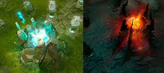
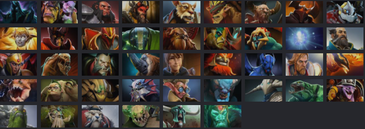
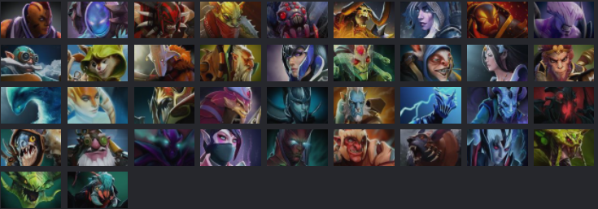
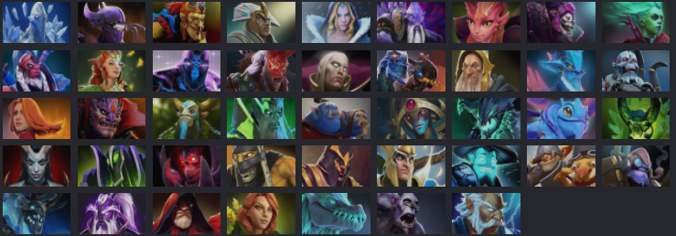
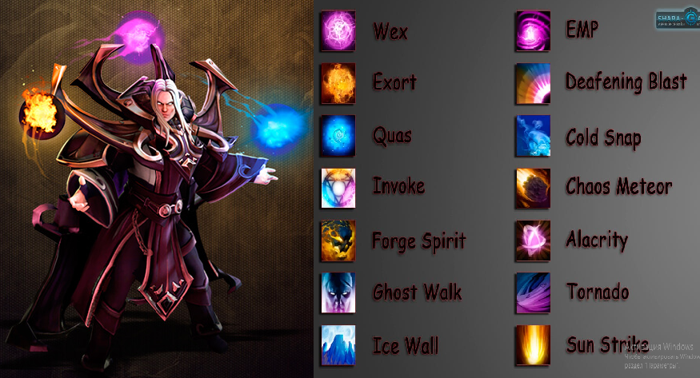

Приветствую всех на моём сайте
Сегодня я вам расскажу и попытаюсь объяснить про игру "Dota 2"
Dota 2 - бесплатная многопользовательская командная компьютерная игра в жанре MOBA («многопользовательская онлайновая боевая арена»), разработанная и изданная корпорацией Valve 9 июля 2013г. На данный момент она имеет версию 7.31b и дальше обновляется.
Суть игры
Игра изображает сражение на карте особого вида; в каждом матче участвуют две команды по пять игроков, управляющих «героями» — персонажами с различными наборами способностей. Для победы в матче команда должна уничтожить особый объект-«крепость», принадлежащий вражеской стороне, и защитить от уничтожения собственную «крепость»

Крепости
Герои, способности и предметы
Герои
На данный момент в игре Dota 2 присутвует 123 героя и они поделены на 3 основных отрибута:
1. Сила - больше здоровья и его восстановления.

2. Ловкость - больше урона и скорости атаки.

3. Интеллект - больше маны и её восстановления.

Каждый по своему силён и слаб. У всех героев есть своя история
Способности
Это уникальные навыки, которыми могут обладать герои. Существует большое количество различных способностей, от простых пассивных до разрушительных энергетических взрывов, способных сотрясать землю. Герои могут обладать четырьмя и более способностями, одна из которых является особой. Каждый раз, когда герой повышает свой уровень, он может улучшить одну из своих способностей
Хочу уделить строчку самому сложному герою в игре - Invoker, на данный момент он имеет 14 активных способностей:

Предметы
Это внутриигровое снаряжение героев, которое может давать героям дополнительные характеристики и специальные способности, всего предметов 136.